require(ISLR)
require(MASS)
require(descr)
attach(Smarket)
## Linear Discriminant Analysis
freq(Direction)
Direction
Frequency Percent
Down 602 48.16
Up 648 51.84
Total 1250 100.00train = Year<2005
lda.fit=lda(Direction~Lag1+Lag2,data=Smarket, subset=Year<2005)
lda.fitCall:
lda(Direction ~ Lag1 + Lag2, data = Smarket, subset = Year <
2005)
Prior probabilities of groups:
Down Up
0.491984 0.508016
Group means:
Lag1 Lag2
Down 0.04279022 0.03389409
Up -0.03954635 -0.03132544
Coefficients of linear discriminants:
LD1
Lag1 -0.6420190
Lag2 -0.5135293plot(lda.fit, col="dodgerblue")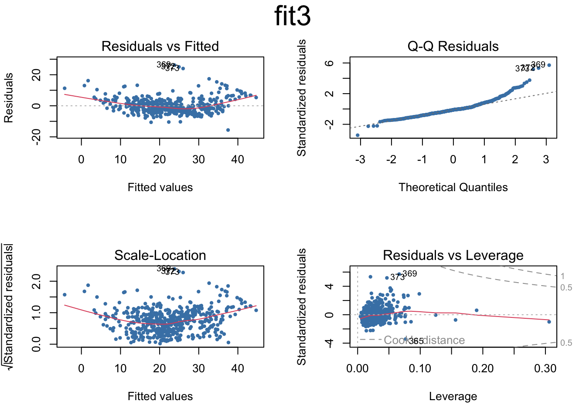
Smarket.2005=subset(Smarket,Year==2005) # Creating subset with 2005 data for prediction
lda.pred=predict(lda.fit,Smarket.2005)
names(lda.pred)[1] "class" "posterior" "x" lda.class=lda.pred$class
Direction.2005=Smarket$Direction[!train]
table(lda.class,Direction.2005) Direction.2005
lda.class Down Up
Down 35 35
Up 76 106data.frame(lda.pred)[1:5,] class posterior.Down posterior.Up LD1
999 Up 0.4901792 0.5098208 0.08293096
1000 Up 0.4792185 0.5207815 0.59114102
1001 Up 0.4668185 0.5331815 1.16723063
1002 Up 0.4740011 0.5259989 0.83335022
1003 Up 0.4927877 0.5072123 -0.03792892table(lda.pred$class,Smarket.2005$Direction)
Down Up
Down 35 35
Up 76 106mean(lda.pred$class==Smarket.2005$Direction)[1] 0.5595238library(haven)
TEDS_2016 <- read_stata("https://github.com/datageneration/home/blob/master/DataProgramming/data/TEDS_2016.dta?raw=true")
glm.vt <- glm(votetsai~female, data = TEDS_2016, family = binomial)
summary(glm.vt)
Call:
glm(formula = votetsai ~ female, family = binomial, data = TEDS_2016)
Coefficients:
Estimate Std. Error z value Pr(>|z|)
(Intercept) 0.54971 0.08245 6.667 2.61e-11 ***
female -0.06517 0.11644 -0.560 0.576
---
Signif. codes: 0 '***' 0.001 '**' 0.01 '*' 0.05 '.' 0.1 ' ' 1
(Dispersion parameter for binomial family taken to be 1)
Null deviance: 1666.5 on 1260 degrees of freedom
Residual deviance: 1666.2 on 1259 degrees of freedom
(429 observations deleted due to missingness)
AIC: 1670.2
Number of Fisher Scoring iterations: 4plot(glm.vt)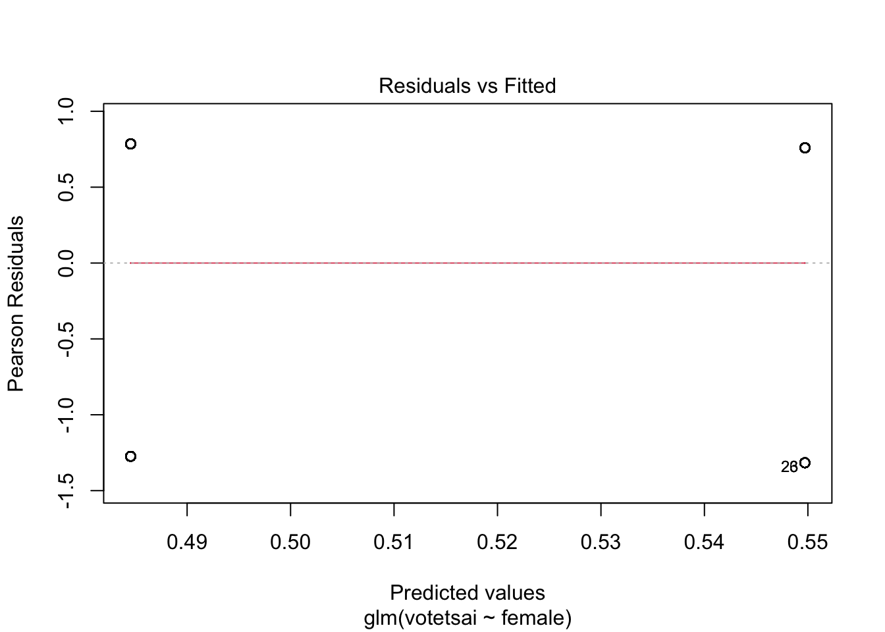
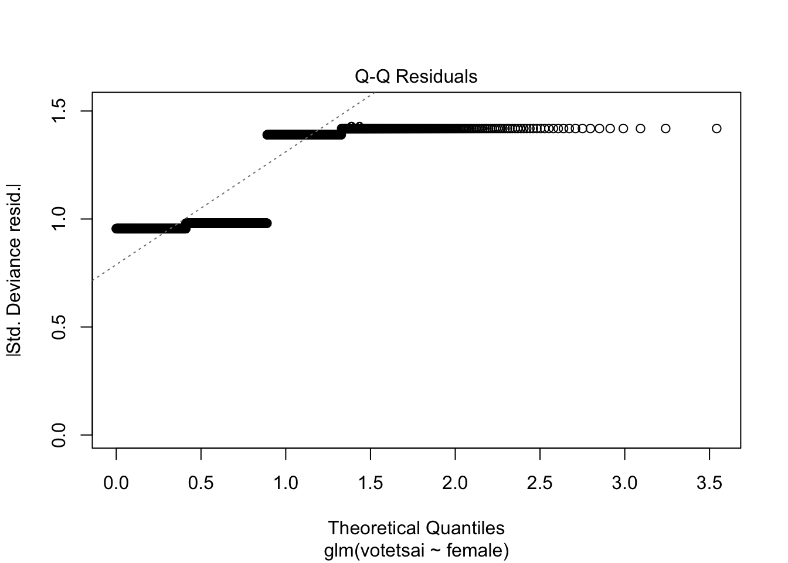
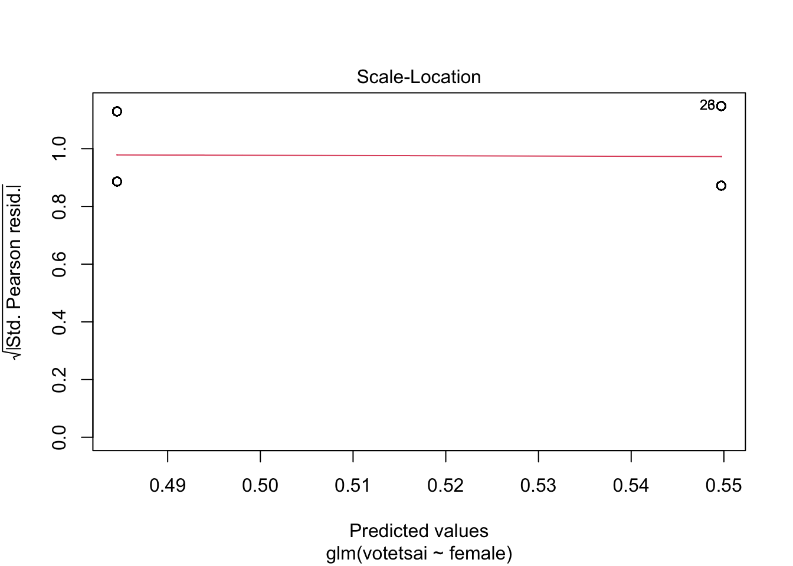
library(ggplot2)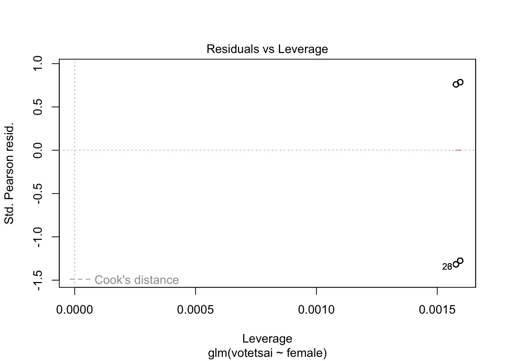
ggplot(TEDS_2016, aes(x = female, y = votetsai)) +
geom_bar(stat = "identity", fill = "#1b98e0") +
labs(title = "Females Voting for Tsai", x = "Sex", y = "Votes")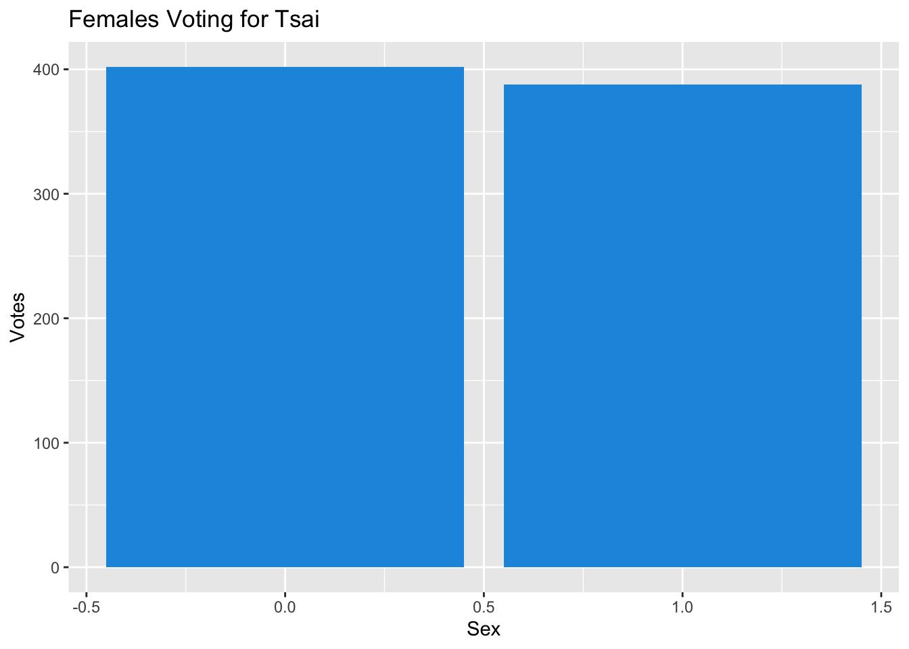
glm.vt <- glm(votetsai~female + KMT + DPP + age + edu + income, data = TEDS_2016, family = binomial)
summary(glm.vt)
Call:
glm(formula = votetsai ~ female + KMT + DPP + age + edu + income,
family = binomial, data = TEDS_2016)
Coefficients:
Estimate Std. Error z value Pr(>|z|)
(Intercept) 1.618640 0.592084 2.734 0.00626 **
female 0.047406 0.177403 0.267 0.78930
KMT -3.156273 0.250360 -12.607 < 2e-16 ***
DPP 2.888943 0.267968 10.781 < 2e-16 ***
age -0.011808 0.007164 -1.648 0.09931 .
edu -0.184604 0.083102 -2.221 0.02632 *
income 0.013727 0.034382 0.399 0.68971
---
Signif. codes: 0 '***' 0.001 '**' 0.01 '*' 0.05 '.' 0.1 ' ' 1
(Dispersion parameter for binomial family taken to be 1)
Null deviance: 1661.76 on 1256 degrees of freedom
Residual deviance: 836.15 on 1250 degrees of freedom
(433 observations deleted due to missingness)
AIC: 850.15
Number of Fisher Scoring iterations: 6plot(glm.vt)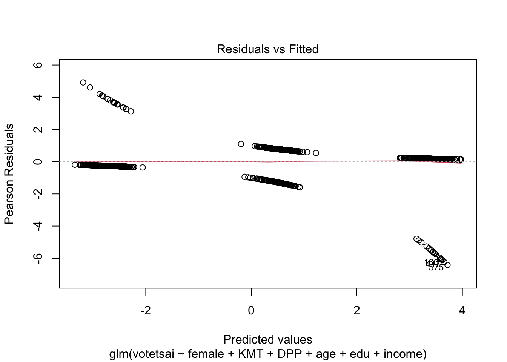
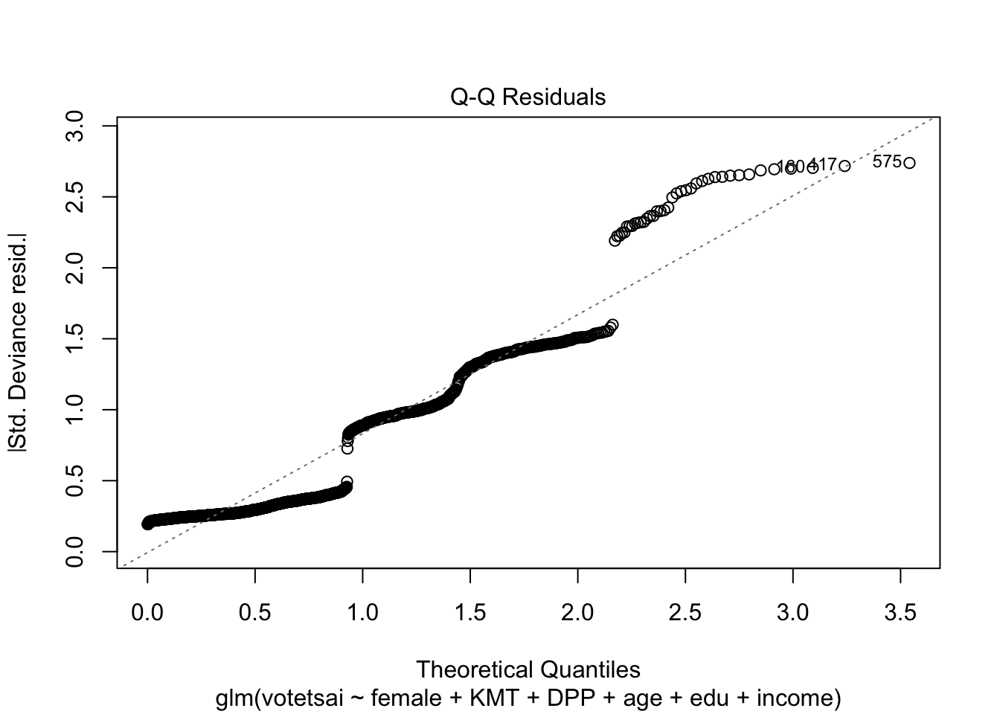
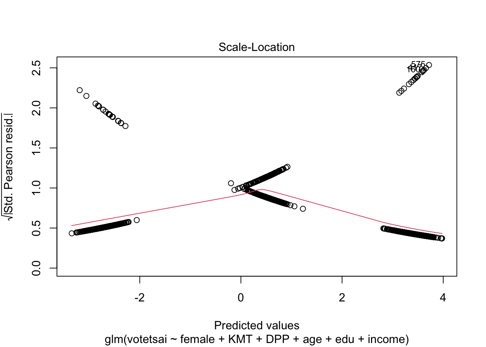
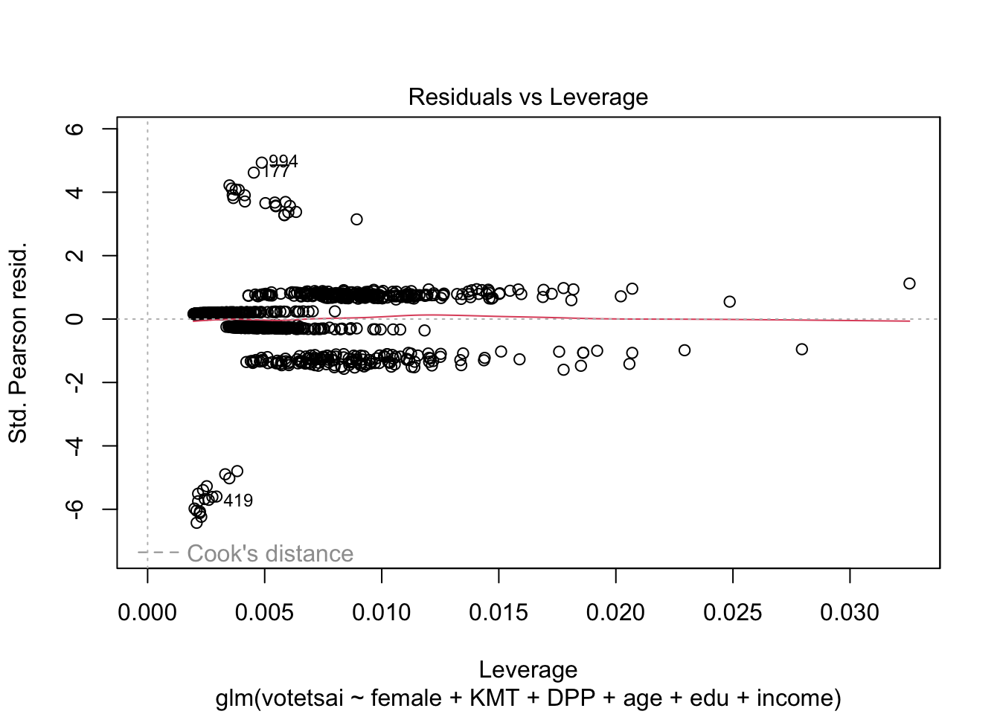
glm.vt <- glm(votetsai~female + KMT + DPP + age + edu + income + Independence + Econ_worse + Govt_dont_care + Minnan_father + Mainland_father + Taiwanese, data = TEDS_2016, family = binomial)
summary(glm.vt)
Call:
glm(formula = votetsai ~ female + KMT + DPP + age + edu + income +
Independence + Econ_worse + Govt_dont_care + Minnan_father +
Mainland_father + Taiwanese, family = binomial, data = TEDS_2016)
Coefficients:
Estimate Std. Error z value Pr(>|z|)
(Intercept) -0.015976 0.679780 -0.024 0.98125
female -0.097996 0.189840 -0.516 0.60571
KMT -2.922246 0.259333 -11.268 < 2e-16 ***
DPP 2.468855 0.275350 8.966 < 2e-16 ***
age 0.003287 0.007884 0.417 0.67672
edu -0.092110 0.090119 -1.022 0.30674
income 0.021771 0.036406 0.598 0.54984
Independence 1.020953 0.251776 4.055 5.01e-05 ***
Econ_worse 0.310462 0.189100 1.642 0.10063
Govt_dont_care -0.014295 0.188765 -0.076 0.93964
Minnan_father -0.247650 0.253921 -0.975 0.32941
Mainland_father -1.089332 0.396822 -2.745 0.00605 **
Taiwanese 0.909019 0.198930 4.570 4.89e-06 ***
---
Signif. codes: 0 '***' 0.001 '**' 0.01 '*' 0.05 '.' 0.1 ' ' 1
(Dispersion parameter for binomial family taken to be 1)
Null deviance: 1661.76 on 1256 degrees of freedom
Residual deviance: 767.13 on 1244 degrees of freedom
(433 observations deleted due to missingness)
AIC: 793.13
Number of Fisher Scoring iterations: 6plot(glm.vt)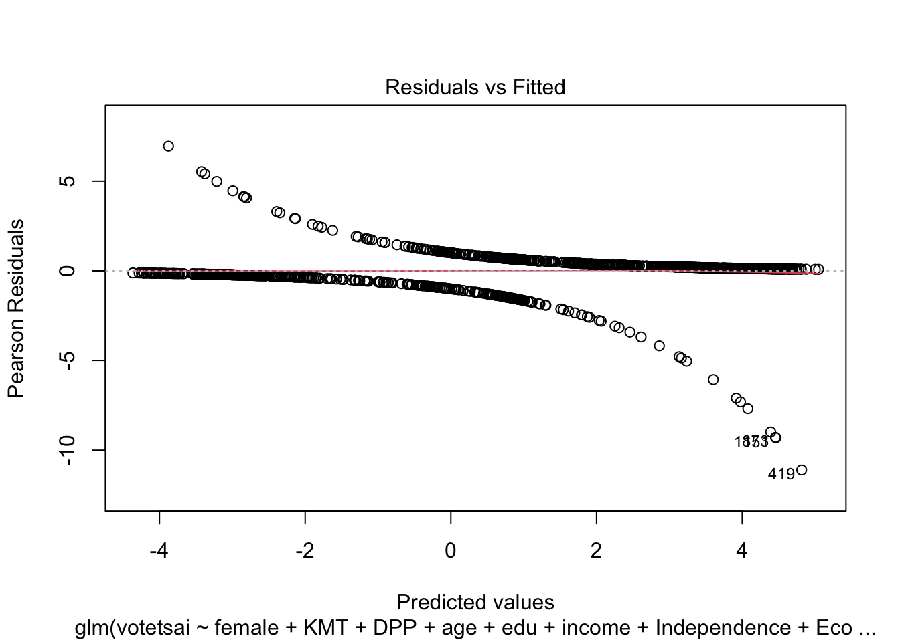
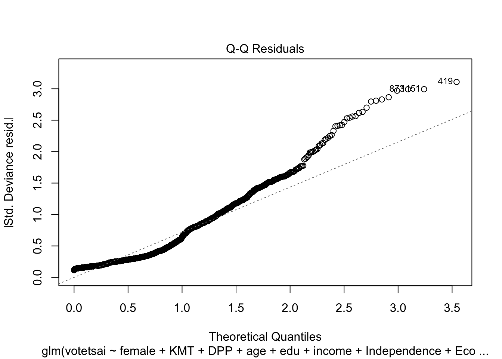
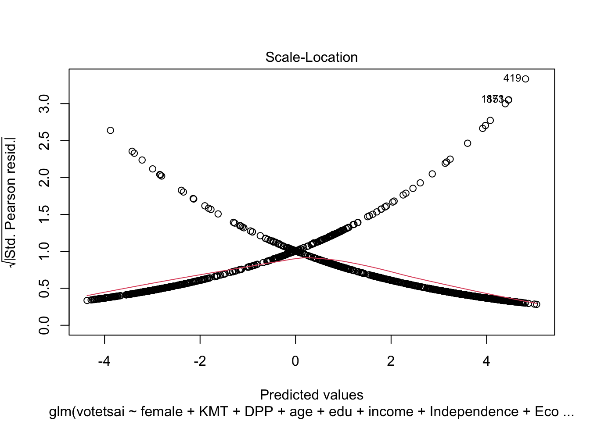
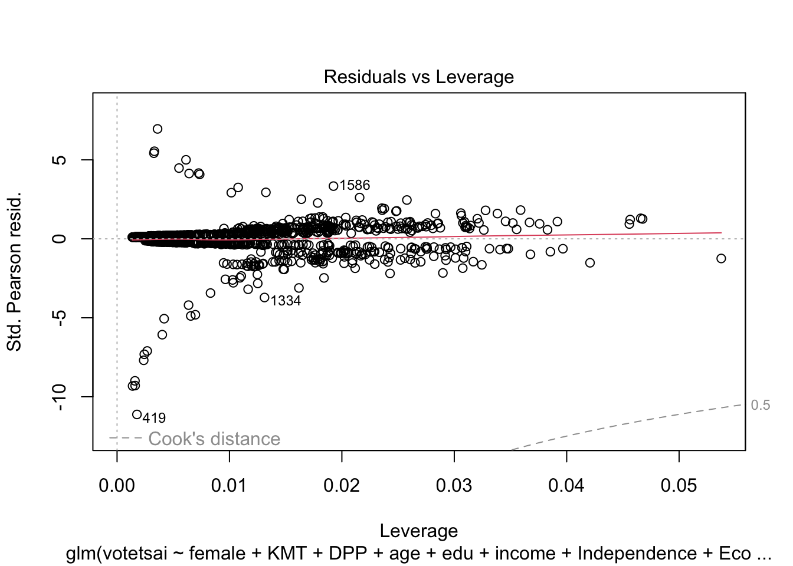